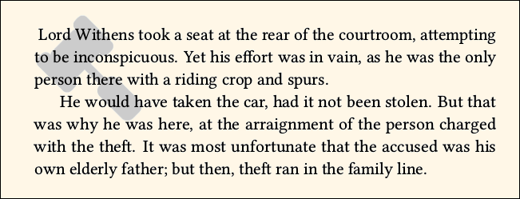

Documentation for novel document class
Documentation version: 1.38.
8. Images
If you intend to place a lot of images in your document, or if you need to have text wrap around floating images, then the novel document class is not well-suited to your purpose. This is because the methods of formatting, and the emphasis on maintaining a constant baseline skip, sometimes interfere with the behavior you expect from other document classes.
Yet you can place the occasional image. Most fiction does use imagery on the title page, and sometimes at chapter starts. Some stories include a map, or an image of ancient writing. In a detective novel, we might get a glimpse at handwritten evidence. The novel class has its own commands for easily dealing with these situations.
Like it or not, you are restricted to png and jpg raster images. No vector artwork. No included eps or pdf. Forget about pgf and TikZ. Although you can "cheat" the novel commands, and circumvent the restrictions, don't do it. The restrictions are intentional. The reasons are explained below.
8.1 Use Raster Images
Place raster images, not vector images, in your document.
You may think that the above sentence is a mistake. Haven't you been told that vector artwork is always preferable to rasterized artwork, because vector artwork is scalable? The part about being scalable is true. But if you do not need scalability, vector artwork is worse.
How so? A PDF file can incorporate vector artwork, and if properly done it will meet commercial printing standards. Sadly, it is often not properly done. When vector artwork has technical errors, as it often does, then the appearance will depend on which software is used to view the image. The fact that it is within a PDF does not always help.
When you design a vector image, or perhaps acquire one, you approve its appearance based on what you see on your computer. The odds are good that someone else, on a different computer, will be using the same software and thus see the same result. However, that is not true of the software built into commercial printing machines. That software may interpret ambiguous vector instructions in a different way than you expected.
A good example is on pages 232-234 of the Adobe PDF 1.7 Reference. That's an enormous file, full of technical information. You don't need to read it. But Adobe provides an example of a vector drawing in the form of a five-pointed star, made with one continuous line that crosses itself. There are two possible rules for deciding whether the central pentagon should be filled or not. They produce different results. Adobe chooses a particular rule, and so should all compliant software. But is all software compliant? Without reading the Adobe spec, there is no particular reason to prefer one rule over the other. And, that's a simple example. Many vector drawings are very convoluted, in ways that make the artist's intent difficult to interpret.
You normally do not need to scale images. Your finished work will be viewed at fixed size on the printed page, not at variable size in a PDF reader. So, scalability is not an advantage. Your image is placed on paper at its exact size and resolution. You are in complete control. If it is purely black/white line art, its detail will be about the same whether it was placed as vector or raster. If it is grayscale, it is subject to halftoning, which reduces the resolution in any case.
Do not attempt to place an image by including a PDF within your TeX file. The reason is that the included PDF may carry its own File Data, which will differ from the File Data of the main PDF. There's nothing you can do about that, and commercial printers don't like it. So, don't do it. Indeed, novel may ban it!
8.2 Use Flattened png or jpg Image Format
The novel image-handling commands require the png or jpg formats, exclusively. If you already have a raster image in another format, such as tif, you must convert it. If you have a vector image, such as eps or svg format, you must rasterize it. This must all be done in an external graphics program, such as GIMP or Inkscape. It cannot be done from within TeX.
Both jpg and png images can store their resolution internally. When you export images from a graphics program, be sure that the resolution is stored. This may or may not be an option that you need to check.
With png, the image must be flattened (no transparency). Be sure to flatten the image before you export it to png. With jpg, the exported image is always flattened.
When using grayscale, be sure to convert the image to true grayscale, which has only one color channel. In GIMP, this is achieved with the Image > Mode menu. Note that an RGB or CMYK image "that only uses grays" is not the same thing, since these have three or four color channels!
When using pure black/white (png only), you can get there with GIMP's Image > Mode > Indexed menu.
Note that within the finished PDF file, images are stored in an internal format which differs from your input. If your image is in the wrong format, or contains transparency, it will not be detected by TeX.
8.2.1 Saving the Resolution
Image resolution is measured in dots per inch (dpi). In a graphics program, it may be called pixels per inch (ppi). And, if the software was written in Europe or Asia, it may be measured in pixels per centimetre!
When you prepare an image in a graphics program, you must first ensure that it is at the correct resolution. Most U.S. print services require 300dpi for grayscale images, 600dpi for black/white line art. Then, it is a simple matter of multiplying the image dimensions (in inches) by the resolution, to get the image dimensions in pixels.
Example: A grayscale image that will print at 1.25" wide by 1.5" high, must be 375 pixels wide by 450 pixels high, at 300dpi. If the original image is at different dimensions, it must be cropped and scaled to the correct size. However, it is not enough to finish the image at 375x450 pixels. You must specifically set the resolution to 300dpi. If you fail to set the resolution correctly, then the image will not appear at its correct size in your PDF.
In GIMP, you can use the Image > Scale Image dialog box to ensure that the image is at the proper size and resolution. When you change any of the settings, others may change in response. Be sure that all settings are satisfactory.
When you export your image, you may be asked whether or not to save the resolution. Be sure to save it.
Example dialog boxes for grayscale png exported from GIMP:

8.2.2 Removing Private Metadata
Your image may contain "private metadata" that records how the image was created, especially if it was converted from a digital photograph. It may also contain color profile data that is inappropriate for a grayscale or black/white image. Commercial printing standards prefer that such private metadata be removed from images; the PDF File Data should speak for everything, not the individual images.
The simplest way to remove private metadata is via a command-line program: Use either ImageMagick, or GraphicsMagick. These programs work on Windows, Linux, and (so I am told) OS/X. Specific code is shown in the workflow examples, below. If you ever re-work an image, you must once again remove its private data.
8.3 Line Art vs. Grayscale
Two kinds of images may appear in a black-and-white book: line art, and grayscale.
Line art contains only black and white. Moreover, there cannot be any places where the black or white areas are very tiny. Most print services request that your line art be rasterized at 600dpi (dots per inch), but that does not mean you can emulate gray with an alternating pattern of black and white, repeated 300 times per inch. All it means is that the sharp transition from black areas to white areas can be resolved to about 1/600" during printing (only "about" since the ink spreads a little).
So, if you think you can use Floyd-Steinberg dithering to convert a grayscale image to "line art," that won't work: The printer will note that it cannot resolve such fine detail, and treat it as a grayscale. The result will be worse than if you had left it as grayscale instead of dithering to black and white.
Think in terms of how an offset press works. Look it up on the Internet. You can have a sharp boundary between black and white, but you cannot closely mingle tiny black and white areas. Actually, at low production volume, your book may be printed with a technology that can resolve very fine details. But you cannot count on that; and, if your book does sell well, you may be shocked if the print technology changes.
A PDF file can place ordinary (vector) text atop an image. However, if the underlying image is halftoned, there is the risk that the overlying text will also be halftoned, even if it sits atop white areas of the image. Ask your print service for advice. It may be better to make the text part of the image, and anticipate halftoning by using appropriately styled text.
8.3.1 Workflow: Line Art in GIMP
To create a suitable line art image in GIMP, with post-processing in ImageMagick or GraphicsMagick, follow these instructions:
(1) Open the image file in GIMP. If it is a vector format (such as svg or pdf), ensure that it is resolved to 600 pixels/in with anti-aliasing, and that its size is the same as your intended dimensions (measured in inches or mm). You can also use a larger size, if you intend to crop some of the periphery; or you can use a smaller size, if you intend to make it larger by adding white space.
(2) If you need to crop to a smaller size, or add to a larger size, do it now. Image > Canvas Size, with Resize Layers All.
(3) If you need to edit the image, by adding or removing anything, do it now.
(4) Image > Flatten Image.
(5) Image > Mode > Grayscale.
(6) View > Zoom to an appropriate amount that shows the image at approximately its print size. That depends on your monitor's resolution. On my own computer, 25\% is about right. Does not need to be exact.
(7) Colors > Threshold. If necessary, adjust the slider until the image looks best. It might be that the default 50\% works for you. If you move it to the left, then black areas will become a little narrower. If to the right, black areas will become a little thicker.
(8) Image > Mode > Indexed > Use black and white (1-bit) palette. Remove unused colors from colormap. No dithering.
(9) File > Export. Use png (Portable Network Graphics) extension. When the dialog box appears, ensure that "save resolution" is checked. Use the highest level of compression offered. The exported image may look poor in some image viewers, because those viewers do not read the full resolution. Not a problem. The image will look good when seen in better viewers.
(10) Command-Line Terminal, using GraphicsMagick (or ImageMagick without the preceding gm):
gm mogrify -strip nameofimage.png
(11) Sanity check, again using GraphicsMagick (or ImageMagick without the preceding gm):
gm identify -verbose nameofimage.png
After a few moments, the Terminal will show some information. It should say that the depth is 1-bits per pixel, that the only color is gray (1 bits), that the resolution is 236.22 pixels per centimeter (which is 600dpi). The page geometry, divided by 600, will give you the image size in inches (thus, a page geometry of 900+1200+0+0 represents an image 1.5" wide x 2" high).
8.3.2 Workflow: Grayscale in GIMP
To produce a suitable grayscale image in GIMP, with post-processing in ImageMagick or GraphicsMagick, follow these instructions:
(1) Open the image file in GIMP. If it is a vector format (such as svg or pdf), ensure that it is resolved to 300 pixels/in with anti-aliasing, and that its size is the same as your intended dimensions (measured in inches or mm). You can also use a larger size, if you intend to crop some of the periphery; or you can use a smaller size, if you intend to make it larger by adding white space.
(2) If you need to crop to a smaller size, or add to a larger size, do it now. Image > Canvas Size, with Resize Layers All.
(3) If you need to edit the image, by adding or removing anything, do it now.
(4) Image > Flatten Image.
(5) Image > Mode > Grayscale.
(6) View > Zoom to an appropriate amount that shows the image at approximately its print size. That depends on your monitor's resolution. On my own computer, 25\% is about right. Does not need to be exact.
(7) Very dark grays are hard to produce accurately, and so are very light grays. If your image relies on areas that ar nearly black and nearly white, then consider adjusting lightness and contrast so that they are not so close to black and white. GIMP's Colors > Levels might be more useful than Colors > Brightness/Contrast.
(8) There is no transparency, but you can achieve that effect by ensuring that white areas are truly white, not light gray. Use GIMP's Select By Color Tool, with a very low threshold (perhaps 1) to choose areas that should be exactly white, then clear them.
(9) File > Export. Use png (Portable Network Graphics) extension. When the dialog box appears, ensure that "save resolution" is checked. Use the highest level of compression offered. The exported image may look poor in some image viewers, because those viewers do not read the full resolution. Not a problem. The image will look good when seen in better viewers.
(10) Command-Line Terminal, using GraphicsMagick (or ImageMagick without the preceding gm):
gm mogrify -strip nameofimage.png
(11) Sanity check, again using GraphicsMagick (or ImageMagick without the preceding gm):
gm identify -verbose nameofimage.png
After a few moments, the Terminal will show some information. It should say that the type is grayscale, at 8 bits per pixel. The resolution is 118.11 pixels per centimeter (which is 300dpi). The page geometry, divided by 300, will give you the image size in inches (thus, a page geometry of 900+1200+0+0 represents an image 3" wide x 4" high).


Most important of all: Scroll through the information. Near its end, you should see a line like this. The exact wording will depend on your software:
(For png images) png: IHDR.color_type: 0 (grayscale)
(For jpg images) JPEG-Colorspace: 1 and JPEG-Colorspace-Name: GRAYSCALE
The above codes are the only ones that matter. Even if other information claims that the image is grayscale, or lists the colors and they are all shades of gray, that is not good enough. When automated software reviews your PDF for compliance, it will look at the png IHDR.color_type, which must be 0, or the JPEG-Colorspace, which must be 1. Anything else fails. If the information is different, it means that you forget to change the mode to grayscale before you exported the image.
You may ask: If the image was not really grayscale, can it be converted to grayscale using a simple command line, with ImageMagick or GraphicsMagick? The answer is yes, but don't do it that way. The reason is that there are many ways to map colors (even "gray colors") to true grayscale, and an automated conversion may produce unexpectedly light or dark results. It is better to do the conversion in a graphics program, where you can see what you are doing.
8.3.3 Workflow: Scaling the image after \Rework.
When you use one or both of the \Rework commands, the font size and/or the baselineskip will change. However, it does not scale images. In many cases, there is no problem. But in some cases, an un-scaled image will disrupt the previous flow of text or pagination. If you look in the log file, you will see an Alert message, which suggests (only suggests) appropriate values for scaling problem images, depending on whether they are placed inline or block. Then, you should re-work the image in an external image editor. When you scale the image, be sure that the revised version is at the correct resolution of 300dpi or 600dpi, or whatever is necessary.
It is best to go back to your copy of the original artwork, before you exported it to png or jpg. But what if you do not have anything but the 1-bit or grayscale images that you created earlier? Then do this:
(1) If the image is 1-bit, change to Color > Mode grayscale.
(2) Use Image > Scale Image to get new dimensions, at 600 or 300 pixels per inch. Careful: Sometimes when you change size, it auto-changes resolution, or vice-versa. Click back and forth in the dialog box, to ensure that both the dimensions and resolution are correct. The default Cubic interpolation is OK.
(3) Change View to something that puts the image at its approximate print size.
(4) If desired, play with Filters > Enhance > Sharpen.
(5) Image > Flatten.
(6) If the image is to be 1-bit line art, use Colors > Threshold and Image > Mode >Indexed, as before.
(7) Export as png, then mogrify the image, as before. Be sure to identify the image and look for its png IHDR.color_type or JPEG-Colorspace, as before.
The above does not take too much time, and will provide superior results. Note that when an image is placed within text, the calculation for text positioning is different than the calculation for image positioning. It is possible (although unlikely) that a \Rework situation will cause an unexpected page break, due to roundoff error in the placement of the final line on a page. This can be fixed by subtracting (or, in some cases, adding) as little as \vspace{-0.001\nbs} before or after the re-scaled image.
8.4 Placing Images In Your Document
An image may be placed as an inline element, using the \InlineImage command. This allows the image to mingle with text, and even have text as an overlay.
\BlockImage places the image so that subsequent text will clear the bottom of the image, and be on the baseline grid. You may also accompany the image with text in its own block space, if you wish.
If your book has a lot of images, then you should consider using a page layout program (such as Scribus) instead of TeX. That's because the best strategies for an image-intensive picture book are very different from the strategies adoped by novel.
Beware of overlap. If images overlap each other, or overlap with text, no error will result. If text lies atop an image, the result may be desirable. All other situations are undesirable. Since TeX cannot detect such errors, you need to carefully review the result.
Do not use the ordinary TeX commands, or environments, for floats or figures.
8.4.1 \charscale[scale,hoffset,voffset]{text}, \charscale*[scale,hoffset,voffset]{text}
The \charscale command pertains to text, not images. It is mentioned here because it can place text almost anywhere on a page, even overlapping other text or previously-placed images. Thus, it provides an image-like effect.
The command is documented on Page 7.
8.4.2 \InlineImage[hoffset,voffset]{imageFile.png or .jpg} and starred version
This command places the image as an inline element, at 100% scale. The use of png or jpg images, with file extension, is required.
You may offset the image horizontally or vertically. Positive direction is to the right and up. If you use one offset, then you must use both (empty brackets may be used for defaults). Any units of length may be used, but the preferred units are em or \textwidth for horizontal, and em or \nbs for vertical, because these are most compatible with the \Rework commands.
By default, the top of the image is at the text baseline. If you prefer that the bottom of the image be at the text baseline, use voffset b. Example:
\InlineImage[0pt,b]{imageFile.png}
Thanks to the calc package, offsets may use \widthof{text} and/or \heightof{text} as lengths. The most useful of these is when you wish to align the top of an image at the X-height of surrounding text:
\InlineImage[0pt,\heightof{X}]{imageFile.png}
You may also use \heightof{\Aring} for the tallest accented letter normally found in Latin-1.
Lengths \imagewidth and \imageheight may also be used for offsets. These lengths remain set, and can be used for other purposes (such as displacing text) until another image is placed.
Offsets may be written as combinations of lengths. If you use the baseline b as above, it must be the first character of voffset. If you use \widthof or \heightof, then its backslash must be the first character unless it is preceded by another length. Thus, an offset of -\heightof{X} is prohibited, but you can use 0pt-\heightof{X}.
Here are some examples of allowable code:
\InlineImage[2.3em, -0.4em]{imageFile.png}
\InlineImage[0pt-\widthof{eee}, b+\heightof{X}-0.2em]{imageFile.jpg}
The image occupies zero vertical space. So, it will not push apart baselines. The next line(s) of text may overlie the image. In some cases, this is desirable. If you do not want that effect, then you can either insert a suitable number of \null lines after the image, or use \BlockImage instead.
With the un-starred command, the image occupies its natural horizontal width. That is, text following the image will (if it fits) continue from the right edge of the image. But with the starred command, the image occupies zero width. In this case, text following the image will continue from the left of the image, and overlie the image.
Having text overlie the image is allowable, and can create some interesting special effects. However, such effects are rarely used in fiction. When your print service sees what you have done, they may think that it is a mistake, and flag your file. Be sure that you discuss this with your print service.
If you do allow text to overlie an image, be sure that the image is very light. Repeat: very light. Depending on the printing technology, an image may print darker than you see on your computer screen, and that would make text hard to read. At low print volume, your print service will probably use a technology that is like an industrial-strength home inkjet printer, which can make very sharp text over images. However, if your book goes to volume production, then the technology will be different. Volume printing will use halftoned images, and the text overlay may also become halftoned, which will reduce its sharpness considerably. Once again: Discuss this with your print service!
Note that an image may be placed in a way that prints some of the image in the margin. That's allowable if your margin is wider than the minimum required for printing clearance. But even if it is not allowable, there will be no complaint or warning from TeX.
Do not place an image so that it approaches or goes beyond the page edge. That requires a "bleed box" which is not part of novel capabilities. If your book needs that kind of image handling, use a page layout program instead.
Do not place images so that they overlap. Although that is allowed in the PDF, it is likely to be flagged as an error by your print service.
8.4.3 Text Over \InlineImage
As noted above, an \InlineImage or its starred version, can be used as the background to any subsequent text. Just as with any other text, whatever sits atop an image must be pure black. If you need text in gray, then you must integrate the rasterized text with the image in an external graphics program, instead of typing the text in your document.
When text overlays an image, it retains its identity as vector paths, as far as the PDF is concerned. In some printing processes, particularly those for very low volume production, the result will be as sharp and dark as ordinary text. However, if your books sells well (or is being prepared to sell well), the image will be converted to halftone, and the text that lies above it may also be converted to halftone. This will reduce the sharpness of the text. It is not necessarily a problem, unless your text is very small or has fine details.
If the text-over-image is part of a title, then the text is naturally large and dark, and will easily withstand halftoning.
Be aware that not all print services will accept text over images. It's not that they cannot do it; after all, your home and office printers can easily do it. The reason they object is because the pages of your book will be handled in small volume by persons who are unfamiliar with the book. Text over an image may be flagged as a printing error or a bug in the PDF. In the advertising world, text over image is routine. But in the world of fictional novels, it is unusual. Don't imagine that they will decide what you meant to do, by reading your book. Also, very sharp image/text, at low printing volume, will not appear as sharp when the technology changes for higher volume production. They know that, but are not sure if you know that.
An inline image occupies zero vertical space. If you place its top near the bottom of the textblock, then the image will happily flow into the lower margin and perhaps off the bottom of the page, without an error (but the print service will reject it). The reason that TeX does not provide an error message is quite simple: Technically, it is not an error! It is just not what you meant to do. The software cannot read your mind.
Example:
\noindent\InlineImage*[0pt,1.2\nbs]{gavel.png} Lord Withens took a seat at the rear of the courtroom, attempting to be inconspicuous. Yet his effort was in vain, as he was the only person there with a riding crop and spurs.\par
He would have taken the car, had it not been stolen. But that was why he was here, at the arraignment of the person charged with the theft. It was most unfortunate that the accused was his own elderly father; but then, theft ran in the family line.\par

8.4.4 \BlockImage[alignment,hoffset,voffset]{imageFile.png or .jpg}[text]
Note that \BlockImage has an optional argument that precedes the mandatory image file name. It has another optional argument that follows the file name. If this second option is used, there must be no space between }[.
The first optional argument has up to three comma-separated values. The first is alignment: l, c, or r for left, center, or right. The second and third values are hoffset and voffset. Unlike the \InlineImage command, do not use b to indicate vertical position relative to the image bottom; it is always at the top with this command. The default alignment is centered, without offsets.
An automatic calculation clears the height of the image. Subsequent text will be on grid. This is the right thing to do when the image and included text fit on a single page. But if they cannot both fit on a single page, an unusual layout will result.
8.4.5 \BlockImage and Text
The second optional argument of \BlockImage, following the image, may contain text that will accompany the image in the same block of space. The text is left-aligned like ordinary text, no matter which alignment you use for the image. The text may be in more than one paragraph, and may use {\centering ...\par} or \begin{adjustwidth} ... \end{adjustwidth} for positioning relative to the image. The text may overlie the image, using \charscale. You may need to use \indent or \forceindent or \backindent to control how the text appears. Note that you cannot "flow" text around an image in novel class.
Example:
It was a dark and stormy night. Lord Withens mounted his horse and rode through the darkness, accidentally trampling some petunias in Her Ladyship's garden.\par
\BlockImage[l]{gnome.png}[\begin{adjustwidth}{8em}{0pt}\forceindent Suddenly he was confronted by an irate gnome, who expressed an opinion in the crudest of language, even for a gnome.\par
Lord Withens was taken aback. How dare this mere gnome speak to him in such a tone of voice? But then he remembered that the gnomes had gone to college, where swearing was routine.\par\end{adjustwidth}]
\charscale[1, 5\nbs]{CENSORED}\forceindent Lord Withens shrugged, and rode on. There was nothing to do but remain silent, this time taking more care. He would speak with his wife about the gnome situation when he returned.\par

In the above example, the text to the right of the image happens to have just the right number of lines to fill the available area. But that is only because I wrote it that way. If I had written less, then there would be one or more blank lines before the subsequent text ("Lord Withens shrugged..."). If I had written more, then the subsequent text would have been pushed down by the necessary number of lines, and there would have been more white area underneath the gnome.
Thus, this technique requires careful inspection, particularly if there is the danger that the image or accompanying text may overflow the bottom of the page.
Note that I used the start of the following text as a reference point for placing CENSORED over the gnome. That is not the only way it could have been done, but it was easy to discern the necessary offset.
• In general, avoid using accompanying text with an image, with the possible exception of titles and other special layouts. There is little need for it in the flowing text of a novel. If you find that you need to use it frequently, then perhaps your book would benefit from a page layout program such as Scribus, instead of TeX.